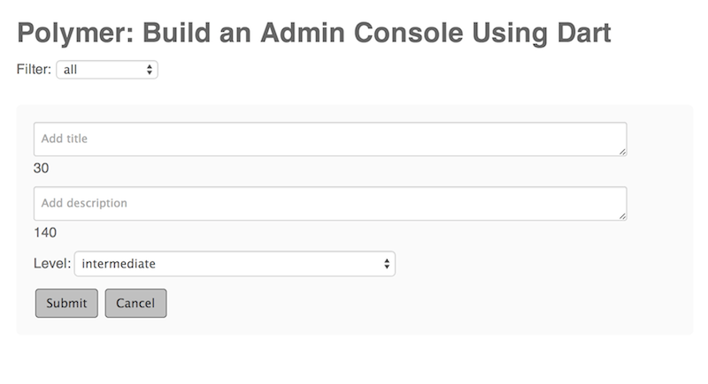
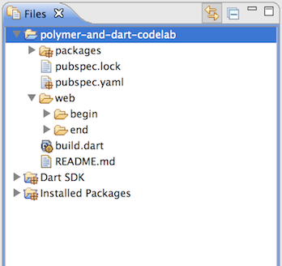

This code lab introduces you to polymer.dart, which helps you to use custom elements to build a web app. To complete this lab you should have programming experience, but you don’t need experience with web programming or the Dart langauge.
In this code lab, you build a single-page admin console for code labs. (Yes, this is a meta code lab.) The console lets you add, remove, and edit the code labs, as well as filter them by their difficulty level.
You want to build something fast, and you want to write clean, maintainable, and elegant code. You decide that Polymer and Dart are the right tools for the job.
Here’s a picture of the app you build in this code lab:

Now that you know what you will be building, let’s get started.
In this step, you download Dart and get the sample code.
→ If you haven’t already done so, get the Dart download.
Unzip the ZIP file, which creates a directory called dart.
(For more options, go to the download page.)
The Dart tools work in recent versions of , , or .
→ Go to the dart directory and double-click DartEditor.
Got questions? Having trouble? Go to the Troubleshooting Dart Editor page.
Download the sample code from the polymer-and-dart-codelab GitHub repo using one of the following options:
Download the zip file,
polymer-and-dart-codelab-master.zip.
Unzip the ZIP file, which creates a directory called
polymer-and-dart-codelab-master.
Clone the repo. For example, from the command line:
% git clone https://github.com/dart-lang/polymer-and-dart-codelab.git
This creates a directory named polymer-and-dart-codelab.
→ In Dart Editor, use File > Open Existing Folder… to open
the polymer-and-dart-codelab directory.
→ Click to expand the web directory.

Note: If you see red X’s at the
left of the filenames or if the packages directory is missing,
the packages are not properly installed. Right-click pubspec.yaml
and choose Pub Get.
Key information
The packages directory, as well as the pubspec.yaml and pubspec.lock
files are related to package dependencies.
This project has all the dependencies set up for you.
Dart Editor automatically installs the necessary packages.
Dart SDK contains the source code for all of the functions, variables, and classes provided by the Dart Software Development Kit.
Understand the layout of the Polymer code. Learn about custom elements and HTML imports.
→ In Dart Editor, double-click to expand the begin directory (under web). Here is a short description of what each file does:
index.html file is the entry point for this application.
model.dart contains the Codelab class.
codelab_element.html and codelab_element.dart contain
HTML and Dart code for <codelab-element>, a
Polymer element representing a Codelab object.
codelab_form.html and codelab_form.dart contain
HTML and Dart code for <codelab-form>, a
Polymer element representing a form for creating or updating a Codelab.
codelab_list.html and codelab_list.dart contain
HTML and Dart code for <codelab-list>, a
Polymer element representing a collection of Codelab objects.
A Polymer element is a custom, reusable, complex HTML element. In polymer.dart, the visual aspect of the element is implemented in HTML and CSS, and the element’s behavior is implemented in Dart. You can use Polymer elements that others have created (such as core elements or paper elements), or you can build your own.
A Polymer element is defined in an HTML file
(for example, codelab_list.html).
A Polymer element typically has the following three-part structure:
<template> tags.<style> tags.The index.html file is this application’s entry point:
<!DOCTYPE html>
<html>
<head>
<meta charset="utf-8">
<meta name="viewport" content="width=device-width, initial-scale=1.0">
<title>Polymer: Build an Admin Console Using Dart</title>
<link rel="import" href="codelab_list.html">
<link rel="stylesheet" href="app.css">
</head>
<body>
<h1>Polymer: Build an Admin Console Using Dart</h1>
<codelab-list></codelab-list>
<script type="application/dart">export 'package:polymer/init.dart';</script>
</body>
</html>
The following line is an example of an HTML import, an important part of the Web Component stack:
<link rel="import" href="codelab_list.html">
HTML imports are a way to include and reuse HTML documents in other HTML
documents. We use the <codelab-list> component imported from
codelab_list.html like any other HTML element:
<body> ... <codelab-list></codelab-list> ... </body>
The following line initializes Polymer:
<script type="application/dart">export 'package:polymer/init.dart';</script>
→ Right-click index.html (under begin) and choose Run in Dartium. This launches the app in a custom build of Chromium which includes the Dart VM. In later steps, you’ll run the app in JavaScript as well.
→ A dialog may ask for remote device access in order to run your Dart application. Click OK to accept this application.
For now, all you see is a headline. You’ll now write the rest of this app!
→ Open model.dart and replace the contents of the barebones Codelab class
with the following:
class Codelab extends Observable {
static const List<String> LEVELS
= const ['easy', 'intermediate', 'advanced'];
static const MIN_TITLE_LENGTH = 10;
static const MAX_TITLE_LENGTH = 30;
static const MAX_DESCRIPTION_LENGTH = 140;
@observable String title;
@observable String description;
@observable String level;
// Constructor.
Codelab([this.title = "", this.description = ""]);
}
Key information
You’ve defined some constants containing validation rules for a
Codelab object.
You’ve defined three fields, title, description, and level.
And you’ve restricted each code lab to one of three preset levels.
Notice the @observable annotation before title, description, and
level? This tells Polymer that you want to trigger two-way data binding
between these fields and the UI. This provides the following functionality:
<form> element) is bound to an @observable
field, it can modify its value.Two-way data binding is very powerful, and you’ll be using it when you
create the HTML for the <codelab-form> element.
→ Right-click index.html (under begin) and choose Run in Dartium.
Since we haven’t updated the UI, you still see just the bare headline. We’ll be changing the UI soon.
Check that your project builds without errors.
→ Open codelab_form.html. Add the following snippet of markup between
</style> and the </template> (there’s nothing there now):
<form>
<div class="field">
<textarea placeholder="Add title" value="{{codelab.title}}">
</textarea>
<div>
<span class="chars-left">{{maxTitleLength - codelab.title.length}}</span>
</div>
</div>
<div class="field">
<textarea placeholder="Add description" value="{{codelab.description}}">
</textarea>
<div>
<span class="chars-left">
{{maxDescriptionLength - codelab.description.length}}
</span>
</div>
</div>
<div class="field">
<label>Level: </label>
<select value="{{codelab.level}}">
<option template repeat="{{level in allLevels}}">
{{level}}
</option>
</select>
</div>
<div>
<button type="submit">Submit</button>
</div>
</form>
Key information
You’ve added a couple of <textarea> tags for the title and
description fields, a <select> for the level field, and a Submit
button.
You bind <form> widgets to fields of the codelab object:
<textarea placeholder="Add title"
value="{{codelab.title}}">
</textarea>
...
<textarea placeholder="Add description"
value="{{codelab.description}}">
</textarea>
...
<select value="{{codelab.level}}">
...
</select>
Since the title, description, and level fields in the
Codelab model are observable, this creates a two-way data
binding between the fields and the UI. This provides the following
functionality:
If a field has an initial value, it is displayed (useful when editing an object).
If the user changes the value of a bound form element,
the value of the @observable field updates automatically.
Data binding makes it easy to keep track of the characters remaining for
each <textarea> field.
<span class="chars-left">{{maxTitleLength - codelab.title.length}}</span>
...
<span class="chars-left">{{maxDescriptionLength - codelab.description.length}}</span>
Since changes to observable fields is live, the counters update as the user
types into a <textarea>.
You use template repeat to iterate over the three level values:
<select value="{{codelab.level}}">
<option template
repeat="{{level in allLevels}}">
{{level}}
</option>
</select>
→ Open codelab_form.dart and add this line to the beginning of the
CodelabFormElement class:
@published Codelab codelab;
Key information
This declares a Codelab object as a CodelabFormElement field.
The @published annotation lets you pass the
codelab object as an attribute to <codelab-form> as is done here,
for example:
<codelab-form
codelab="{{codelab}}"></codelab-form>
→ Next, add the following lines to the CodelabFormElement class:
List<String> get allLevels => Codelab.LEVELS; int get minTitleLength => Codelab.MIN_TITLE_LENGTH; int get maxTitleLength => Codelab.MAX_TITLE_LENGTH; int get maxDescriptionLength => Codelab.MAX_DESCRIPTION_LENGTH;
Key information
Codelab model’s static
variables inside Polymer templates.The new version of CodelabFormElement should now look like this:
@CustomTag('codelab-form')
class CodelabFormElement extends PolymerElement {
@published Codelab codelab;
List<String> get allLevels => Codelab.LEVELS;
int get minTitleLength => Codelab.MIN_TITLE_LENGTH;
int get maxTitleLength => Codelab.MAX_TITLE_LENGTH;
int get maxDescriptionLength => Codelab.MAX_DESCRIPTION_LENGTH;
CodelabFormElement.created() : super.created() {}
}
Key information
In codelab_form.dart, the @CustomTag annotation before the
CodelabFormElement class declares the tag for the element. The tag for
CodelabFormElement is <codelab-form>.
The CodelabFormElement inherits from
PolymerElement. The following constructor definition is required:
CodelabFormElement.created() : super.created() {}
In codelab_form.html, you use ‘double curlies’
({{}}) for variable and expression
interpolation.
→ Right-click index.html (under begin) and choose Run in Dartium.
You still only see the bare headline (this is about to change). But make sure that your app runs without any errors.
codelab list.You’ve created the form, and now you add it to the <codelab-list>
element to display it in the UI.
→ Open codelab_list.html, and add the following between the
</style> and the </template> tags (there is nothing there now):
<div>
<codelab-form codelab="{{newCodelab}}"></codelab-form>
</div>
→ In codelab_list.dart, modify the CodelabList class so it looks like
this:
@CustomTag('codelab-list')
class CodelabList extends PolymerElement {
@observable Codelab newCodelab = new Codelab();
String get defaultLevel => Codelab.LEVELS[1];
CodelabList.created() : super.created() {
newCodelab.level = defaultLevel;
}
}
Key information
In codelab_list.dart, you’ve added a newCodelab field that
binds to the template.
You’ve assigned a default value to newCodelab’s level. When the
<form> loads, the default level is automatically selected.
→ Right-click index.html (under begin) and choose Run in Dartium.
You should see the following:
<textarea>s, the counters change.You haven’t implemented Submit functionality for the form yet, so
hitting ‘Submit’ just reloads the page (and wipes your content). Also,
while it is nice that counters tell the user about the remaining
characters for the title and description fields, you want to
implement better field validation and error handling.
→ In codelab_form.dart, add the following fields to the
CodelabFormElement class directly above the CodelabFormElement.created()
constructor:
@observable String titleErrorMessage = ''; @observable String descriptionErrorMessage = '';
→ After the constructor, add the following validator methods:
bool validateTitle() {
if (codelab.title.length < minTitleLength ||
codelab.title.length > maxTitleLength) {
titleErrorMessage = "Title must be between $minTitleLength and "
"$maxTitleLength characters.";
return false;
}
titleErrorMessage = '';
return true;
}
bool validateDescription() {
if (codelab.description.length > maxDescriptionLength) {
descriptionErrorMessage = "Description cannot be more than "
"$maxDescriptionLength characters.";
return false;
}
descriptionErrorMessage = '';
return true;
}
Key information
→ In codelab_form.html, replace the <form> with the
following:
<form>
<div class="field">
<textarea placeholder="Add title" value="{{codelab.title}}"
on-keyup="{{validateTitle}}">
</textarea>
<div>
<span class="chars-left">
{{maxTitleLength - codelab.title.length}}</span>
<span class="error" hidden?="{{titleErrorMessage.isEmpty}}">
{{titleErrorMessage}}
</span>
</div>
</div>
<div class="field">
<textarea placeholder="Add description" value="{{codelab.description}}"
on-keyup="{{validateDescription}}">
</textarea>
<div>
<span class="chars-left">
{{maxDescriptionLength - codelab.description.length}}
</span>
<span class="error" hidden?="{{descriptionErrorMessage.isEmpty}}">
{{descriptionErrorMessage}}
</span>
</div>
</div>
<div class="field">
<label>Level: </label>
<select value="{{codelab.level}}">
<option template repeat="{{level in allLevels}}">
{{level}}
</option>
</select>
</div>
<div>
<button type="submit">Submit</button>
</div>
</form>
Key information
You now invoke validateTitle() and validateDescription()
every time the user releases a key:
<textarea ...
on-keyup="{{validateTitle}}"></textarea>
...
<textarea ...
on-keyup="{{validateDescription}}"></textarea>
Polymer uses the on-<event> syntax for events.
You now display error messages when validation fails:
<span class="error"
hidden?="{{titleErrorMessage.isEmpty}}">
{{titleErrorMessage}}
</span>
...
<span class="error"
hidden?="{{descriptionErrorMessage.isEmpty}}">
{{descriptionErrorMessage}}
</span>
When there is no error message, you set the hidden attribute on the
<span>. Using ?= syntax to set boolean attributes is common in
Polymer.
→ Right-click index.html (under begin) and choose Run in Dartium.
You should see the following:
While validation works now, there is still no way to submit the form and display the new code lab object.
→ In codelab_form.dart add the following code to the bottom of
the CodelabFormElement class:
validateCodelab(Event event, Object detail, Node sender) {
event.preventDefault();
if (validateTitle() && validateDescription()) {
dispatchEvent(new CustomEvent('codelabvalidated',
detail: {'codelab': codelab}));
}
}
Key information
The validateCodelab() method calls the code lab validators.
If the code lab object validates,
validateCodelab() fires a custom event,
passing the validated code lab object as data.
It is the responsibility of
<codelab-form>’s parent element to register a
listener that adds the new code lab to <codelab-list>.
You implement that code in the next step.
Next, you plug validateCodelab() into the template.
→ In codelab_form.html,
add an on-submit event to the <form> element:
<form on-submit="{{validateCodelab}}">
Now write code to handle the codelabvalidated event.
→ In codelab_list.html, replace the HTML between the </style>
and the </template> tags with the following:
<div on-codelabvalidated="{{addCodelab}}">
<codelab-form codelab="{{newCodelab}}"></codelab-form>
</div>
<div>
<template repeat="{{codelab in codelabs}}">
<codelab-element codelab="{{codelab}}"></codelab-element>
</template>
</div>
→ In codelab_list.dart, add the following at the top of the
CodelabList class body:
@observable List<Codelab> codelabs = toObservable([]);
→Then add these methods to the bottom of CodelabList:
resetForm() {
newCodelab = new Codelab();
newCodelab.level = defaultLevel;
}
addCodelab(Event e, var detail, Node sender) {
e.preventDefault();
codelabs.add(detail['codelab']);
resetForm();
}
Key information
You added a codelabs field to CodelabList and made it
observable. This is the definitive collection of code labs in this app.
You added an on-codelabvalidated handler to <codelab-form>s
parent element:
<div on-codelabvalidated="{{addCodelab}}">
<codelab-form
codelab="{{newCodelab}}"></codelab-form>
</div>
When <codelab-form> fires a codelabvalidated event,
it transmits the newly created code lab in the detail parameter.
When the parent
<div> triggers addCodelab(), it appends the code lab to the codelabs
list and resets the form.
You added code to display all code labs:
<template repeat="{{codelab in codelabs}}">
<codelab-element
codelab="{{codelab}}"></codelab-element>
</template>
→ In codelab_element.html, add the following between the
</style> and the </template> tags (there’s nothing there now):
<div>
<div class="codelab">
<div class="field">
<h2>{{codelab.title}}</h2>
</div>
<div class="field">
<p>{{codelab.description}}</p>
</div>
<div class="field">
<p><span>Level: </span>{{codelab.level}}</p>
</div>
</div>
</div>
→ In codelab_element.dart, add the following as the first
line in the body of the CodelabElement class:
@published Codelab codelab;
Key information
@published annotation lets you pass a code lab as an attribute
to <codelab-element>.→ Right-click index.html file (under begin) and choose Run in Dartium.
You should see the following:
codelab-element element.→ In codelab_element.html, replace all content between
the </style> and </template> tags with the following:
<div on-formNotNeeded="{{cancelEditing}}"
on-codelabvalidated="{{updateCodelab}}">
<template if="{{!editing}}">
<div class="codelab">
<div class="field">
<h2>{{codelab.title}}</h2>
</div>
<div class="field">
<p>{{codelab.description}}</p>
</div>
<div class="field">
<p><span>Level: </span>{{codelab.level}}</p>
</div>
<div class="field">
<span on-click="{{startEditing}}" class="small">Edit</span>
</div>
</div>
</template>
<template if="{{editing}}">
<codelab-form codelab="{{codelab}}"></codelab-form>
</template>
</div>
→ In codelab_element.dart, add the following at the top
of the CodelabElement class body:
@observable bool editing = false; Codelab _cachedCodelab;
→ After the CodelabElement.created() constructor, add the
following methods:
updateCodelab(Event e, var detail, Node sender) {
e.preventDefault();
editing = false;
}
startEditing(Event e, var detail, Node sender) {
e.preventDefault();
_cachedCodelab = new Codelab();
copyCodelab(codelab, _cachedCodelab);
editing = true;
}
cancelEditing(Event e, var detail, Node sender) {
e.preventDefault();
copyCodelab(_cachedCodelab, codelab);
editing = false;
}
copyCodelab(source, destination) {
destination.title = source.title;
destination.description = source.description;
destination.level = source.level;
}
Key information
You created a boolean editing field to keep track of the
editing status of a CodelabElement object.
You use editing to conditionally render templates:
<template if="{{!editing}}">
...
</template>
<template if="{{editing}}">
...
</template>
You created a _cachedCodelab field to store the edited
code lab’s contents.
If you cancel editing, you restore the original code lab values from
_cachedCodelab. See the startEditing() and cancelEditing() methods
in CodelabElement for the caching workflow.
→ In codelab_form.dart, add the following method to the
bottom of the CodelabFormElement class body:
cancelForm(Event event, Object detail, Node sender) {
event.preventDefault();
titleErrorMessage = '';
descriptionErrorMessage = '';
dispatchEvent(new CustomEvent('formnotneeded'));
}
→ In codelab_form.html, locate the <div> containing the
Submit button:
<div> <button type="submit">Submit</button> </div>
→ Add a Cancel button next to it. The <div> should look like
this:
<div>
<button type="submit">Submit</button>
<button type="button" on-click="{{cancelForm}}">Cancel</button>
</div>
→ In codelab_list.html, find the first <div> (located
immediately after the </style> tag):
<div on-codelabvalidated="{{addCodelab}}">
→ Add an on-formnotneeded event handler so that the <div>
looks like this:
<div on-codelabvalidated="{{addCodelab}}"
on-formnotneeded="{{resetForm}}">
Key information
In CodelabFormElement, the cancelForm() method dispatches
a formnotneeded custom event when <codelab-form> is no longer being
used. It is up to <codelab-form>’s parent element to decide how to
handle the custom event.
In <codelab-list>, the parent of <codelab-form>
handles the formnotneeded event by calling CodelabList’s resetForm()
method, which clears the form.
In <codelab-element>, the parent of <codelab-form>
handles the formnotneeded event by calling CodelabElement’s
cancelEditing() method, which clears the form, and also closes it.
→ Right-click index.html (under begin) and choose Run in Dartium.
You should see the following:
→ In codelab_element.html,
located the <div> with the Edit link:
<div class="field">
<span on-click="{{startEditing}}" class="small">Edit</span>
</div>
→ Add a Delete link to the <div>, which should now look like
this:
<div class="field">
<span on-click="{{startEditing}}" class="small">Edit</span> |
<span on-click="{{deleteCodelab}}" class="small">Delete</span>
</div>
→ In codelab_element.dart,
add the following method to the bottom of the CodelabElement class body:
deleteCodelab(Event e, var detail, Node sender) {
e.preventDefault();
dispatchEvent(new CustomEvent('deletecodelab',
detail: {'codelab': codelab}));
}
→ In codelab_list.html, locate the <div> containing the
template repeat:
<div>
<template repeat="{{codelab in codelabs}}">
...
</template>
</div>
→ Add a deletecodelab handler to the <div>. It should now look
like this:
<div on-deletecodelab="{{deleteCodelab}}">
<template repeat="{{codelab in codelabs}}">
...
</template>
</div>
→ In codelab_list.dart, add the following method to the
bottom of the CodelabList class body:
deleteCodelab(Event e, var detail, Node sender) {
var codelab = detail['codelab'];
codelabs.remove(codelab);
}
Key information
The deleteCodelab() method in CodelabElement
dispatches a deleteCodelab custom event, and forwards the code lab to be
deleted with that event.
<codelab-element>’s parent <div> inside
<codelab-list> handles the deletecodelab custom event by
invoking CodelabList’s
deleteCodelab() method. This method removes the code lab from the codelabs
list. Since codelabs is an observed variable (see the @observable
annotation that precedes it in CodelabList), the UI updates automatically
and removes the code lab.
→ Right-click index.html (under begin) and choose Run in Dartium.
You should see the following:
You have now implemented full CRUD (Create, Read, Update, Delete) functionality for code lab objects. The admin you’ve created works well, but as the number of code labs increases, you’d like to be able to filter them by code lab level.
The codelabs list is the canonical source of truth for this app.
In this step, you implement functionality to show a filtered subset
of all code labs.
This step breaks down into the following sections:
You create a filteredCodelabs list to store filtered code lab objects.
You update the contents of filteredCodelabs every time a code lab is
added or removed, or when a code lab’s level is changed.
You add a <select> to the <codelab-list> that lets a user
filter code labs by level.
You begin by creating a filteredCodelabs field and a filter() method
in CodelabList.
→ In codelab_list.dart,
begin by adding the following lines at the beginning of the
CodelabList class body:
static const ALL = "all"; final List<String> filters = [ALL]..addAll(Codelab.LEVELS); @observable String filterValue = ALL; @observable List<Codelab> filteredCodelabs = toObservable([]);
→ Inside the CodelabList.created() constructor, add the following
line:
filteredCodelabs = codelabs;
The constructor should now look like this:
CodelabList.created() : super.created() {
filteredCodelabs = codelabs;
newCodelab.level = defaultLevel;
}
→ In the CodelabList class body, add these methods:
filter() {
if (filterValue == ALL) {
filteredCodelabs = codelabs;
return;
}
filteredCodelabs = codelabs.where((codelab) {
return codelab.level == filterValue;
}).toList();
}
codelabsChanged() {
filter();
}
Key information
Inside CodelabList, you created a filters field for the
filter options you plan to expose through the UI. This includes the
three preset code lab levels, as well as ‘all’.
final List<String> filters = [ALL]..addAll(Codelab.LEVELS);
You created a list, filteredCodelabs, to store the
filtered code labs. Since filteredCodelabs is observable(note the
@observable annotation), the UI updates
automatically when it changes.
You added a filter() method to CodelabList that filters the
contents of codelabs and saves the results in filteredCodelabs.
The codelabsChanged() method in CodelabList is an example of a
Polymer changed watcher.
All properties on Polymer elements can be watched for changes
by implementing a propertyNameChanged handler.
When the value of a watched property changes,
the watcher runs automatically.
Since codelabs is a field in CodelabList, you
can watch it for changes by implementing a codelabsChanged() method.
→ In codelab_list.html,
remove everything between the </template> and </style> tags,
and insert the following HTML in its place:
<div>
<label>Filter: </label>
<select value="{{filterValue}}" on-change="{{filter}}">
<option template repeat="{{filter in filters}}">
{{filter}}
</option>
</select>
</div>
<div on-codelabvalidated="{{addCodelab}}"
on-formnotneeded="{{resetForm}}">
<codelab-form codelab="{{newCodelab}}"></codelab-form>
</div>
<div on-deletecodelab="{{deleteCodelab}}"
on-levelchanged="{{filter}}">
<template repeat="{{codelab in filteredCodelabs}}">
<codelab-element codelab="{{codelab}}"></codelab-element>
</template>
</div>
Key information
You use a template repeat to iterate over the list of filters.
<option template repeat="{{filter in filters}}">
{{filter}}
</option>
When displaying code labs in <codelab-list>, you now iterate
over filteredCodelabs, not codelabs:
<template
repeat="{{codelab in filteredCodelabs}}">
<codelab-element
codelab="{{codelab}}"></codelab-element>
</template>
You’ve implemented most of the filter functionality. But what happens when you’re in a filtered view, decide to edit a code lab, and then change its level? You want the filtering to feel live, and you want the change in a code lab’s level to automatically trigger the filter process. This is easy to implement.
→ In codelab_element.dart,
replace the updateCodelab() method with this new version:
updateCodelab(Event e, var detail, Node sender) {
e.preventDefault();
if (_cachedCodelab.level != codelab.level) {
dispatchEvent(new CustomEvent('levelchanged'));
}
editing = false;
}
Key information
You updated CodelabElement’s updateCodelab() method so that
if a code lab’s level changes, it fires a levelchanged custom event.
Earlier in this step, you changed the template in
codelab_list.html to handle the levelchanged custom event:
<div on-deletecodelab="{{deleteCodelab}}"
on-levelchanged="{{filter}}">
...
</div>
Now when a code lab’s level changes, the CodelabList’s filter() method
runs and updates filteredCodelabs.
That’s it!
→ Right-click index.html (under begin) and choose Run in Dartium.
You should see the following:
This code lab packs a lot of information in a short time. Here are some takeaways:
Polymer lets you implement a lot of functionality while writing very little code.
Create custom elements to organize your code.
Use HTML imports to get access to any custom elements.
Use observable fields and data binding to keep your data and the UI in sync.
Optionally, use custom events to communicate between child and parent elements.
Read more about Polymer at polymer-project.org.
Polymer implements the Web Components stack.
Run some Dart programs online and check out the source code on our Samples page.
Learn more about Dart from the Dart tutorials.
A Tour of the Dart Language shows you how to use each major Dart feature, from variables and operators to classes and libraries.
A Tour of the Dart Libraries shows you how to use the major features in Dart’s libraries.
Please provide feedback about Dart and this code lab at dartbug.com.